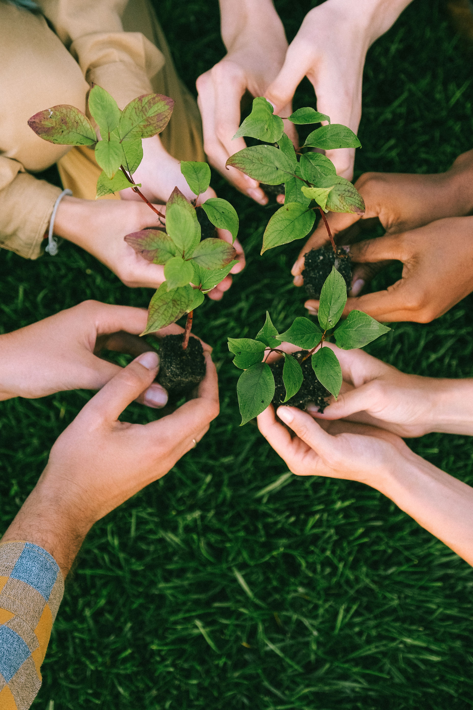
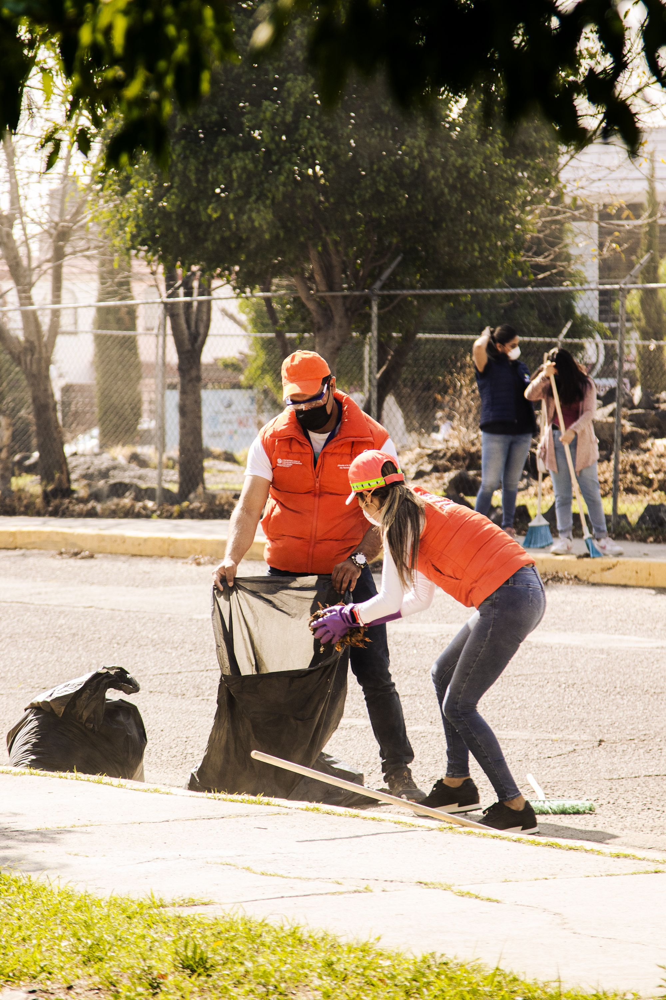
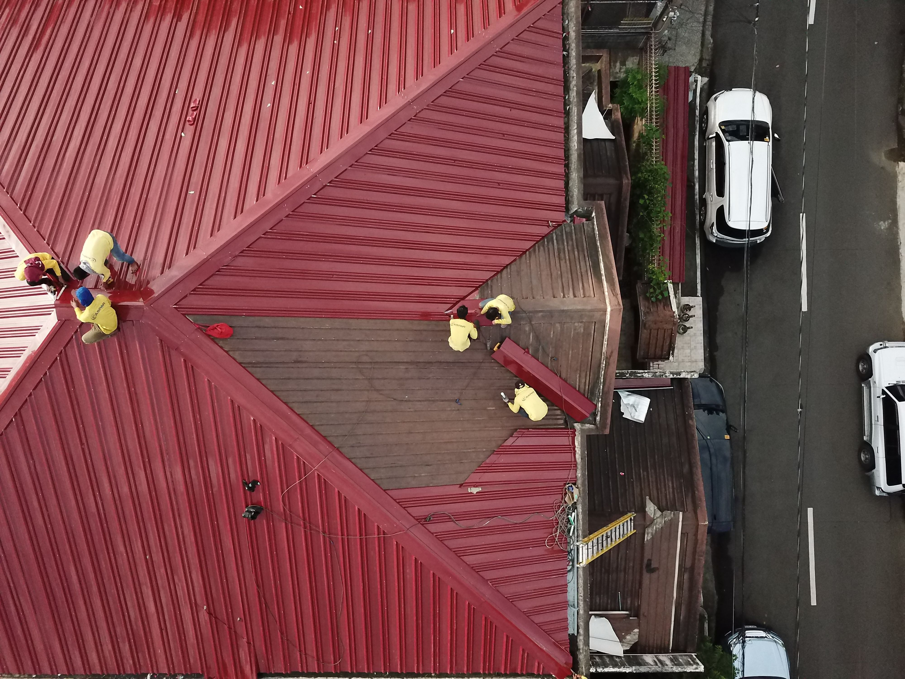
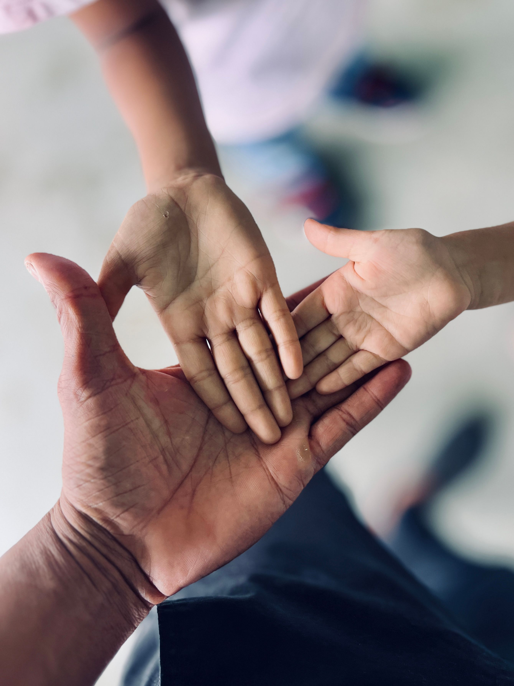

See our current growing catalogue of projects/initiatives aimed at developing our beautiful island of Jamaica:

Our Community Greening initiative brings members together to plant trees to improve the natural landscape. This activity is held every two (2) weeks, on Saturday afternoons, promoting environmental awareness, and helping create cleaner, greener, and healthier communities across Jamaica.

We are committed to ensuring our fellow Jamaican communities always look in pristine condition. Therefore every Monday and Thursday of the week, we host a garbage clean-up event with members and volunteers from the local community to keep Jamaica clean.
We believe in empowerment through education. Through our scholarship and grant programmes, we raise funds to support students who may face financial challenges in pursuing their education and career goals. With the support of our donors and sponsors, we aim to provide one (1) aspiring student each month with financial assistance toward their studies.

We are committed to ensuring that our community centres are maintained to the highest standard. Twice a year, our dedicated team of volunteers comes together to contribute their time and skills to renovation, repairs, and improvement projects, helping to create safe, welcoming, and well-maintained spaces for everyone in the community.
Our youth are the pillars of our future. Twice a month, we host youth development activities designed to encourage personal growth, creativity, and active participation within the community.

We believe in supporting families by providing aid to those facing financial/everyday challenges. Once a month, we provide families in need with essential items and support, including food, school supplies, household necessities, and referrals to available community resources.
Together, we can make a difference
Trees Planted
Scholarships/Grants Awarded
Community Clean-Ups
Families Aided
Comunity Centres Repaired
Youths Trained